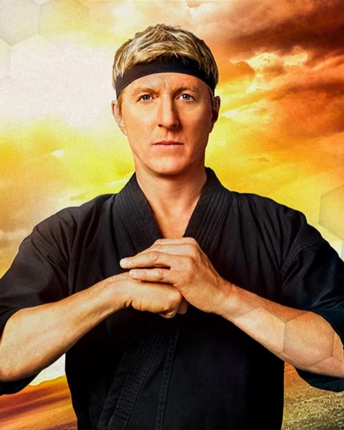

SENSEIS

Ralph Macchio
Daniel Larusso
Daniel era un estudiante de secundaria victima de bullying severo cuya vida cambió cuando fue asesorado por un sabio sensei de karate, quien le enseñó valiosas lecciones de vida y defensa personal. Daniel usó este entrenamiento para protegerse a sí mismo y a los demás, ganando dos campeonatos de kárate consecutivos y venciendo a rivales agresivos que lo desafiaron. Años después de su entrenamiento inicial, Daniel se casó con Amanda y tuvieron dos hijos, Samantha y Anthony. Los LaRusso abrieron un concesionario de automóviles llamado LaRusso Auto Group. Daniel también se retiró del karate y usó las artes marciales como gimmick para promocionar su negocio. Cuando su rival de la escuela secundaria, Johnny Lawrence, resurgió y abrió el Dojo Cobra Kai, Daniel se inspiró para enseñar Miyagi-Do Karate a una generación nueva de estudiantes, para combatir las tácticas agresivas de su némesis. Su rivalidad tenía más en juego que antes, y las cosas se intensificaron durante una pelea escolar que involucró a la hija de Daniel, el estudiante estrella de Johnny y al hijo distanciado de este último. Las secuelas de la pelea en la escuela secundaria encontraron a Johnny y Daniel como aliados reacios. Se vieron obligados a unir fuerzas una vez más cuando John Kreese desafió a sus respectivos dōjōs en el Torneo de Karate All Valley. Hizo las paces con Johnny y el dúo se unió para entrenar a sus alumnos en dos estilos de kárate para el torneo. Sin embargo, las personalidades y estilos en conflicto de los dos Sensei, combinados con el regreso de un viejo enemigo de Daniel, llevaron a que su alianza se desmoronara. Si bien Daniel y Johnny finalmente se reconciliaron, perdieron el torneo All Valley. Ahora destinado a cumplir un trato con un hombre deshonroso, Daniel se retractó de su trato y solicitó la ayuda de un viejo amigo para derrotar a Kreese, Silver y Cobra Kai de una vez por todas.

William Zabka
Johnny Lawrence
John "Johnny" Lawrence es el antagonista secundario de la película The Karate Kid y el protagonista principal de la serie Cobra Kai. En su adolescencia comenzó una fuerte rivalidad con un chico recién llegado a All Valley, Daniel LaRusso, que duraría más de treinta años. Su cruel entrenamiento con artes marciales lo convirtió en un oponente formidable, ya que era el mejor estudiante en el Dojo Cobra Kai. Después de perder el Torneo de Karate All Valley de 1984, la vida de Johnny se volvió extremadamente desastrosa, y se mantuvo así hasta su edad adulta. Está divorciado de Shannon Keene y es muy distante con su hijo, Robby Keene. En un intento por reparar los errores de su vida, Johnny reabre el Dojo Cobra Kai y se convierte en un sensei para una generación completamente nueva de estudiantes, donde Miguel Diaz se destacó como su primer y mejor alumno.